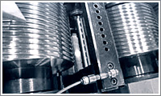
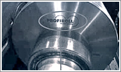
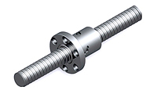
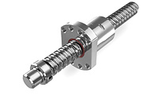
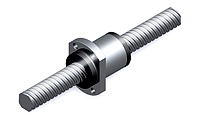
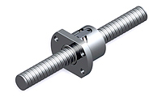
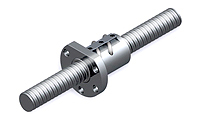
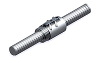
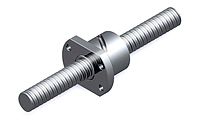
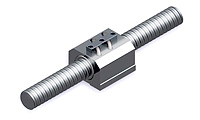

滾珠螺桿/線性滑軌
客服專線：(03)280-6015
PMI 轉造級滾珠導螺桿製程、採用先進的轉造技術搭配德國Bad Düben進口數值電控滾牙機製造，從導螺桿素材選用、轉造加工、中週波表面熱處理、後製加工皆有嚴格品質管控達到需產品之最佳品質。
轉造級滾珠螺桿搭配研磨級螺帽取代了傳統艾克姆導螺桿、梯形導螺桿之傳動方式，可提升運轉順暢度、降低摩擦力及軸向背隙之優點，且供貨迅速、價格低廉，轉造級與研磨級滾珠導螺桿除了在導程誤差之定義與幾何公差有所差異外，亦可用相同預壓方式來消除軸向背隙，歡迎向本公司諮詢相關技術資料。
技術文件
- PDF 規格型錄
- 轉造滾珠螺桿pdf
- 轉造滾珠螺桿FSKW
- 轉造滾珠螺桿SSVW
- 轉造級滾珠螺桿FSIW
- CAD 圖檔請致電公司洽詢

採用最先進德國數值電控滾牙機，轉造製程中，牙輪兩軸油壓缸皆由伺服油壓補正油壓壓力及定位精度。
數值電控滾牙機之牙輪亦採用德國 Bad Düben 原廠滾輪，以維持原廠機台穩定性及轉造後品質。
產品特性
C7、C8、C10 級螺桿已標準化
轉造級螺桿導程精度以JIS B1192 -1997為製造基準規範，PMI C7、C8、C10之產品已標準化。
導程精度最高可達 C5 級
導程精密等級可達 JIS C5、C6 級，如有 C5、C6 級需求請諮詢本公司。
轉造用螺帽精密度高
轉造級螺帽製程與研磨級螺帽製程經過表面硬化處理，採用內螺紋研磨機精磨，以維持使用耐久性及良好的運動平滑性。
螺帽互換性高
當螺桿與螺帽無預壓情況下，在允許的最大軸向背隙內，同規格螺桿可更換不同形式的螺帽。
C7、C8、C10 級導程精度與最大轉造長度
| 外徑 mm | 12 | 14 | 15 | 16 | 20 | 25~28 | 32 | 40 | 50 |
| 長度 mm | 1400 | 2800 | 4400 | 3600 | 4400 | 4400 | 5700 | 5400 | 5200 |
※ C5、C6 級導程精度與最大轉造長度，請與本公司連絡。
轉造級滾珠螺桿之特質
- 價格低
因為螺桿、螺帽的標準化大量生產，所以價格比精密級低。 - 交期短
由於製程比較少，且備有庫存，所以交貨時間比較快。 - 規格齊
有供應高速用途的超高導程系列，絕對能滿足顧客的需求。 - 導程精度
本公司轉造級螺桿滾軋是採用德國製造的數值控制滾牙機，其真圓度、真直度、等精度皆能控制在0.01mm以內，再加上成熟的技術，故PMI生產之轉造級滾珠螺桿導程精度可達到 JIS C5級的要求。
轉造級滾珠螺桿螺帽型式表
| 內循環系列 (標準規格) | 高導程系列 (標準規格) | |
|---|---|---|
|  |  |  |
| FSIW | FSIN 歐規規格(DIN) | FSKW |
| 外循環系列 (還配規格) | ||
|---|---|---|
|  |  |  |
| FSWW | FSVW | RSVW |
|  |  | |
| FSBW | SSVW | |